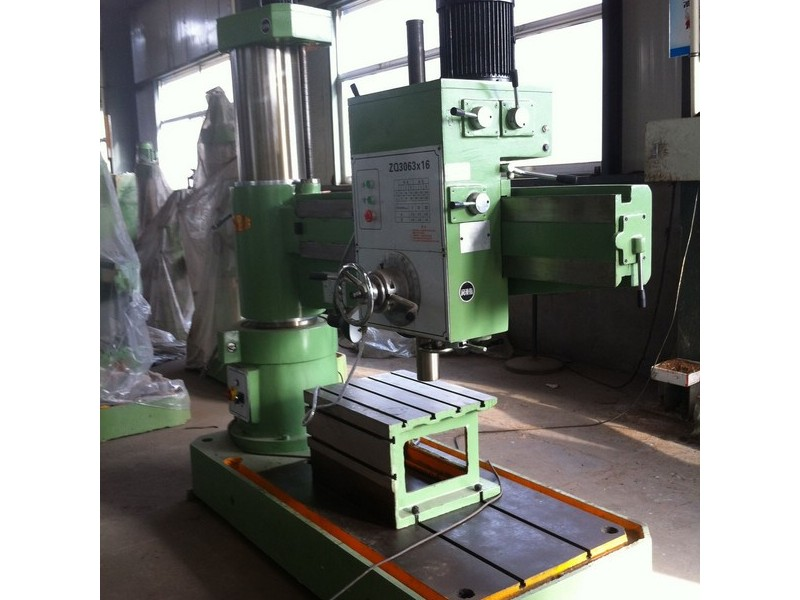

Our Radial Drill Presses are available in Manual and Hydraulic and in different models ranging from 32 mm up to 80 mm of drilling capacity.
They are easy for any skilled worker or shop operator to use since they have all the features and control over the machine. Having a visibly emergency button, it ensures the safety of the operator at all times.
As it is possible to swing the arm relative to the machine's base, these radial arm drill presses are able to operate over a large area without having to reposition the work piece saving considerable time in your project.
| Model: | MRDP 32x9 | MRDP 40x10 | MRDP 40x13 | MRDP 50x13 | MRDP 50x16 |
| MaxDrill Capacity (On Steel SAE 4140): | 32 mm | 40 mm | 40 mm | 50 mm | 50 mm |
| Max Tapping Diameter (On Steel SAE 4140): | M16 | M20 | M20 | M30 | M32 |
| Clamping: | Manual | Manual | Manual | Manual | Manual |
| Taper of Spindle | MT.4 | MT.4 | MT.4 | MT.5 | MT.5 |
| Spindle Speed Range: | 108 to 1000 r/min | 75 to 1220 r/min | 75 to 1220 r/min | 78 to 1100 r/min | 25 to 2000 r/min |
| Spindle Main Motor: | 1.5/2.2 KW | 2.2 KW | 2.2 KW | 4 KW | 4 KW |
| Full Specs | Full Specs | Full Specs | Full Specs | Full Specs |
| Model: | HRDP 50x16 | HRDP 63x20 | HRDP 80x25 |
| MaxDrill Capacity: | 50 mm | 63 MM | 80 MM |
| Max Tapping Diameter (On Steel SAE 4140): | M32 | M36 | M40 |
| Clamping: | Hydraulic | Hydraulic | Hydraulic |
| Taper of Spindle | MT.5 | MT.5 | MT.6 |
| Spindle Speed Range: | 25 to 2000 r/min | 25 to 2000 r/min | 20 to 1600 r/min |
| Spindle Main Motor: | 4 KW | 5.5 KW | 7.5 KW |
| Full Specs | Full Specs | Full Specs |
|  | |
|
|
|
|